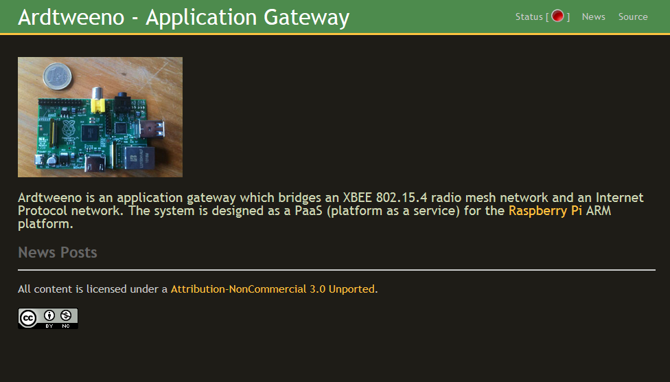

Ardtweeno
802.15.4 - IP Network Gateway
David Kirwan - 00346128 Supervisor: Eamonn de Leastar
Ardtweeno Introduction
The Ardtweeno system is a distributed sensor mesh network gateway, which bridges devices connected through a serial link to devices over Internet Protocol (IP). It is designed as a PaaS suitable for running on the Raspberry Pi.
Ardtweeno features
Ardtweeno offers the following features
- collect and store data received from the mesh network
- triggers which react to data coming from specific nodes
- open source software
- low cost commercially available hardware
- simple design for self sufficient modular sensor platforms
- API
Ardtweeno API
The Ardtweeno API has the following features
- store / retrieve packet data
- retrieve node data
- retrieve zone data
- add nodes to a watchlist
- perform administration functions
What's inside?
Ardtweeno makes use of some of the following technologies
Ardtweeno Gateway Frontend
When directly connected to the Ardtweeno Gateway, users are greeted with the following screen. It shows a basic interface including URI's to the gateway git repository, my blog and a simple indicator to tell if the SerialParser subsystem is running or not.
Ardtweeno API
The HTTP front end acts as the API for the Ardtweeno system, which the SerialParser subsystem uses in order to post data to the gateway.
Posting Packets
The following Ruby code demonstrates how easy it is to post packet data to the Ardtweeno gateway through the API
require 'rubygems'
require 'typhoeus'
packet = '{"data":[25.5, 999, 10.2], "key":"abcXYZ123etc"}'
apikey = 'abc33fssfe'
Typhoeus::Request.post("http://ardtweeno-hostname/packets",
:body => {:payload => packet, :key => apikey})
Retrieving Packets
The following Ruby code demonstrates how easy it is to retrieve packet data from the Ardtweeno gateway through the API
require 'rubygems'
require 'typhoeus'
apikey = 'abc33fssfe'
paramsToSend = {:key => apikey}
packets = Typhoeus::Request.get("http://localhost:4567/api/v1/packets",
:body=> paramsToSend).body
Retrieving Nodes
The following Ruby code demonstrates how easy it is to retrieve node data from the Ardtweeno gateway through the API
require 'rubygems'
require 'typhoeus'
apikey = 'abc33fssfe'
paramsToSend = {:key => apikey}
nodes = Typhoeus::Request.get("http://localhost:4567/api/v1/nodes",
:body=> paramsToSend).body
Retrieving Zones
The following Ruby code demonstrates how easy it is to retrieve zone data from the Ardtweeno gateway through the API
require 'rubygems'
require 'typhoeus'
apikey = 'abc33fssfe'
paramsToSend = {:key => apikey}
zones = Typhoeus::Request.get("http://localhost:4567/api/v1/zones",
:body=> paramsToSend).body
Retrieving Ardtweeno Gateway Status
The following Ruby code demonstrates how to retrieve the Ardtweeno status through the API
require 'rubygems'
require 'typhoeus'
apikey = 'abc33fssfe'
paramsToSend = {:key => apikey}
zones = Typhoeus::Request.get("http://localhost:4567/api/v1/system/status",
:body=> paramsToSend).body
Retrieving Ardtweeno Config
The following Ruby code demonstrates how easy it is to retrieve the Ardtweeno Gateway Configuration through the API
require 'rubygems'
require 'typhoeus'
apikey = 'abc33fssfe'
paramsToSend = {:key => apikey}
zones = Typhoeus::Request.get("http://localhost:4567/api/v1/system/config",
:body=> paramsToSend).body
Starting the Ardtweeno Gateway
The following Ruby code demonstrates how to start the Ardtweeno SerialParser subsystem through the API
require 'rubygems'
require 'typhoeus'
apikey = 'abc33fssfe'
paramsToSend = {:key => apikey}
zones = Typhoeus::Request.get("http://localhost:4567/api/v1/system/start",
:body=> paramsToSend).body
Stopping the Ardtweeno Gateway
The following Ruby code demonstrates how to stop the Ardtweeno SerialParser subsystem through the API
require 'rubygems'
require 'typhoeus'
apikey = 'abc33fssfe'
paramsToSend = {:key => apikey}
zones = Typhoeus::Request.get("http://localhost:4567/api/v1/system/stop",
:body=> paramsToSend).body
Restart the Ardtweeno Gateway
The following Ruby code demonstrates how to restart the Ardtweeno gateway through the API
require 'rubygems'
require 'typhoeus'
apikey = 'abc33fssfe'
paramsToSend = {:key => apikey}
zones = Typhoeus::Request.get("http://localhost:4567/api/v1/system/restart",
:body=> paramsToSend).body
Add 'node2' to a Watchlist
The following Ruby code demonstrates how to add a node2 to a watchlist through the API
require 'rubygems'
require 'typhoeus'
require 'json'
body = {:key=> "1230aea77d7bd38898fec74a75a87738dea9f657",
:notifyURL=>"",
:method=>"POST",
:timeout=>"60"}
puts Typhoeus::Request.post("http://localhost:4567/api/v1/watch/node2", :body=>body)
Uses for Ardtweeno?
The space that I currently see Ardtweeno occupying is a platform as a service on top of which developers can produce home automation systems, very much like a locally running version of Xively or perhaps Nimbits. Ardtweeno has the ability to receive packets of information, then store them for later analysis and graphing much like these propriety systems mentioned.
Ardtweeno Tech Demonstration
I have constructed a number of basic systems using data gathered by the Ardtweeno gateway, such as the following punchcard graph which details the number of times the movement sensor platform picked up activity in my sitting room
Ardtweeno Tech Demonstration
This topology graph which parses the data retrieved through the API and dynamically constructs a topology of the network
Ardtweeno Tech Demonstration
There are various other types of graphs and charts built using highcharts.js

Ardtweeno Tech Demonstration
To see these and more, see the tech-demo Sinatra web application bundled with the Ardtweeno system
Onto the Practical!
Built using reveal.js